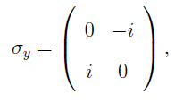
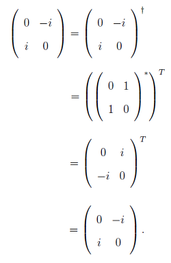

Sigma Y Operator
The Y operator is another of the three Pauli matrices. Like the X operator, it is both
Hermitian and unitary. This is also referred to as the �y operator. On the Bloch sphere, it
is the operator that rotates the qubit around the y-axis by an angle of π. The 2x2 matrix
form of the σy operator is given as:

which is Hermitian as verified below:
